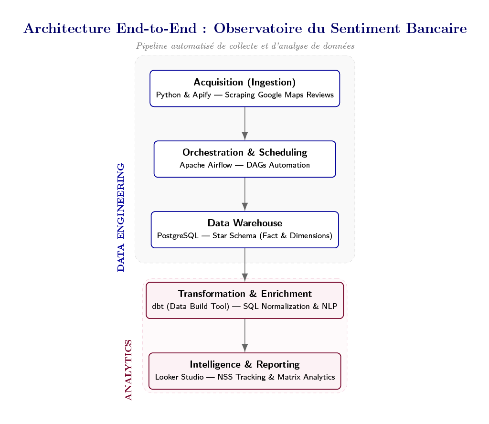
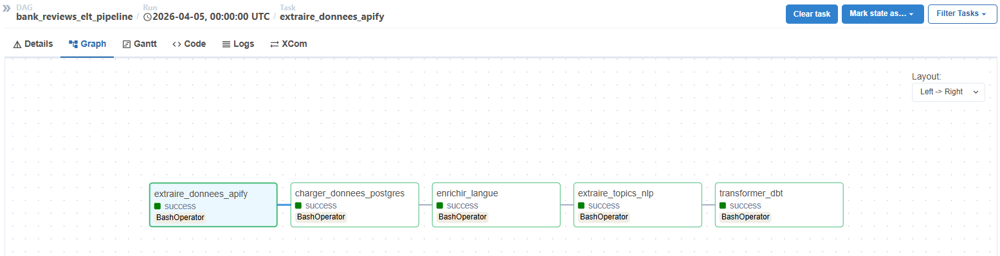
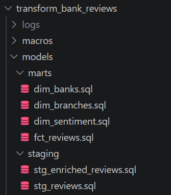
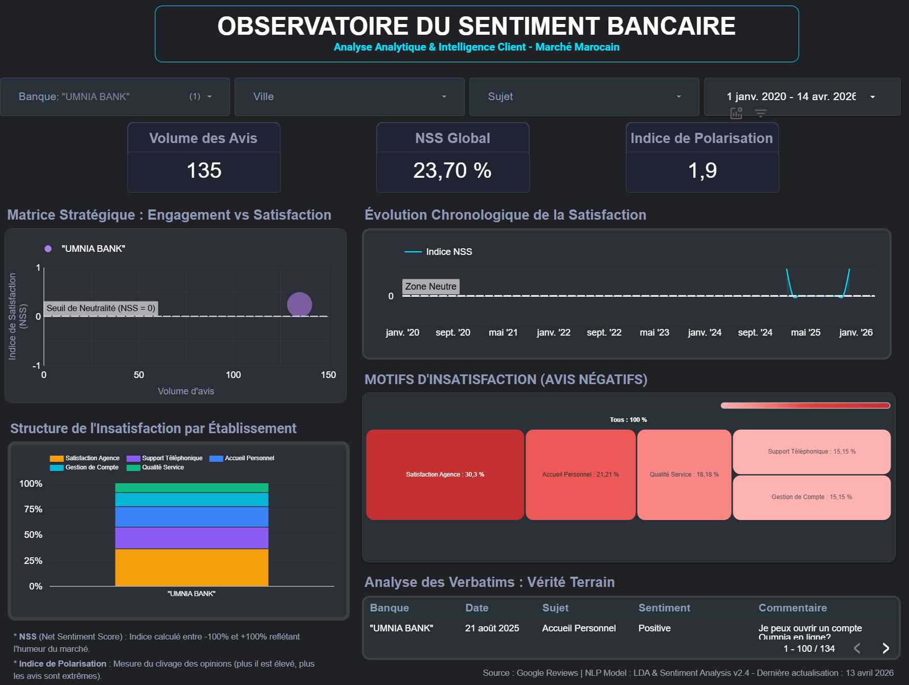

Apache Airflowdbt
PostgreSQLLDA (NLP)
Looker StudioPython
NSS Global Score: -49.78%
Trilingual Pipelines (FR / AR / Darija)
6 Years Historical Data (2020-2026)
Production Data Architecture & Lineage
This system processes unstructured customer verbatims into actionable corporate metrics. The infrastructure relies on an automated Python scraping module orchestrated by Apache Airflow. Raw datasets are landed in a centralized PostgreSQL instance, where dbt manages modular data cleaning and refactoring into an analytical Star Schema layout.
Trilingual Natural Language Processing Layer
The core algorithmic engine natively handles a trilingual text distribution: French, Classical Arabic, and low-resource Moroccan Darija. Deployed Latent Dirichlet Allocation (LDA) to automatically segment core dissatisfaction topics across the top 5 Moroccan banks. Extracted structural business insights by tracking an aggregated Net Sentiment Score (NSS) and a specialized Polarization Index (1.63), mapping sharp territory variations.
System Infrastructure & Lineage Assets

// FIG.01 — End-to-End Functional Architecture: From Raw Scraped Verbatims to Looker Studio Decision Layer

// FIG.02 — Automated Ingestion & Scheduling DAG Orchestration via Apache Airflow

// FIG.03 — Data Warehouse Transform Layers (Staging to Analytical Marts Star Schema) tracked via dbt
Analytical Insights & Business Intelligence
// FIG.04 — Global Market Overview on Looker Studio highlighting structural banking sector dissatisfaction (NSS -49.78%)

// FIG.05 — Granular Business Intelligence Focus: Deep-dive into Umnia Bank's anomalous positive sentiment track (+23.70%)